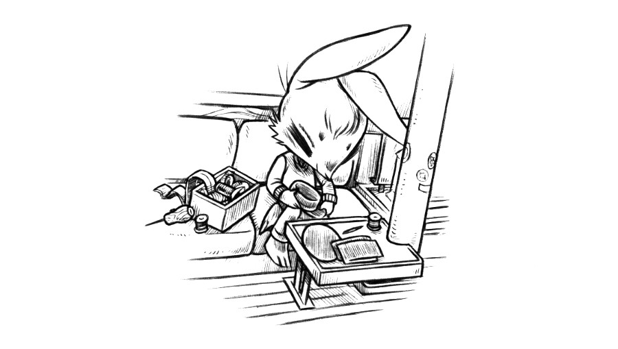

home

log
Receive monthly updates via our RSS feed, or by signing up to our monthly newsletter.
2026
January 2026
- Uxn, we released a new SDL2 emulator called uxn2 to replace the ol' uxnemu!
- Wiki, updated moisture prevention underliner, chainplates(with new photos and measurements), and sewing.
- Punk Rabbits, Completed the series(103 rabbits)!
- Hakum, released a new comic page for Sabotage Study.
This is likely very obvious to most people, but recently it dawned on us that clothes are, in a certain way, open-source. We can go to a thrift store, buy a shirt, rip out the seams, study it, lay all of the pieces down over new fabric, trace the patterns, cut them out, and sew it all back together to produce a copy of that same shirt. We've been wanting to learn how to make our own clothes but didn't know where to begin, until this month. Our first project was to reproduce our hats, after the store we bought them at stopped stocking them. We bought black cotton canvas at a local fabric store, took our old hats apart and re-built them(See Rek's hat, and Dev's hat). Later, Devine did the same for our old messenger backpack.
Goblin Week, an event in which people draw goblins for 7 days, occurs on the last full week of January. Devine's entries were inspired by a passage in Samuel Butler's Erewhon, and Rek drew some spunky cartoony goblins.
Inspired by Prahou's Subversive.pics, we put together image feeds for our personal websites.
We are making progress on the Playdate version of Donsol, and the polished manuscript for the Victoria to Sitka Logbook. We do not yet know when either will be finished so let us end this updated with one last small thing: a video by VacuumBeef of Snake Game in Orca.
Book Club: This month we have reached book 8 of Middlemarch by George Eliot, the very last one. We are also reading Mémoires d'Hadrien by Marguerite Yourcenar, and Amusing Ourselves to Death: Public Discourse in the Age of Show Business by Neil Postman.
Archives
See log archives for 2025, 2024, 2023, 2022, 2021, 2020, 2019, and 2018.